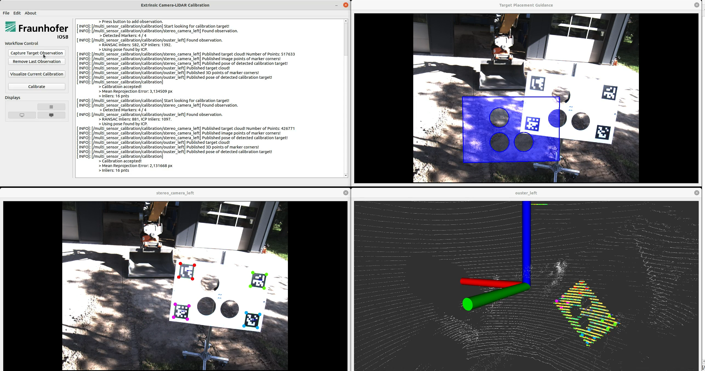

Multi-Sensor Calibration Toolbox¶
 With a graphical user interface the Multi-Sensor Calibration Toolbox guides the user through the calibration of a camera-LiDAR sensor setup.
About¶
multisensor_calibration is an actively maintained universal calibration toolbox for assisted, target-based multi-sensor calibration with ROS 1 and ROS 2 support.
It provides a variety of methods and applications to calibrate complex multi-sensor systems, e.g.
- Extrinsic Camera-LiDAR Calibration,
- Extrinsic Camera-Reference Calibration,
- Extrinsic LiDAR-LiDAR Calibration,
- Extrinsic LiDAR-Reference Calibration, and
- Extrinsic LiDAR-Vehicle Calibration (prototype).
The software is licensed under the new BSD 3-Clause license. If you use this project for your research, please cite:
@inproceedings{
ruf2025_multisensor_calibration,
title={Multi-Sensor Calibration Toolbox for Large-Scale Offroad Robotics},
author={Boitumelo Ruf and Miguel Granero and Raphael Hagmanns and Janko Petereit},
conference={German Robotics Conference (GRC) 2025},
year={2025},
}
The latest source code is available on GitHub.
Furthermore, the multisensor_calibration is also available as an official package for ROS 2 and be installable with apt.
Since ROS 1 is soon end-of-life, there will be no official release for ROS 1.
However, there is a version of the source code available for ROS 1 under the branch noetic.
Getting Started¶
- See our Installation page on how to install it with apt-get as ROS 2 package or how to build from source.
- Look at the Tutorial page on how to use use it to calibrate your sensor setup.
Support¶
Please, use GitHub Discussions for questions and the GitHub issue tracker for bug reports, feature requests/additions, etc.
Or look at the troubleshooting page.
To get information on how to contribute, please look at our contribution guide.
Acknowledgements¶
This software was developed as part of the projects AKIT-PRO (grant no. 13N15673) and ROBDEKON – Robotic Systems for Decontamination in Hazardous Environments (grant nos. 13N14674 and 13N16538), funded by the Federal Ministry of Education and Research (BMBF) under the German Federal Government’s Research for Civil Security program.
The Multi-Sensor Calibration Toolbox was originally developed by Boitumelo Ruf. It is currently mainly maintained by Miguel Granero supported by other members of the Autonomous Robotic Systems group from the Fraunhofer IOSB